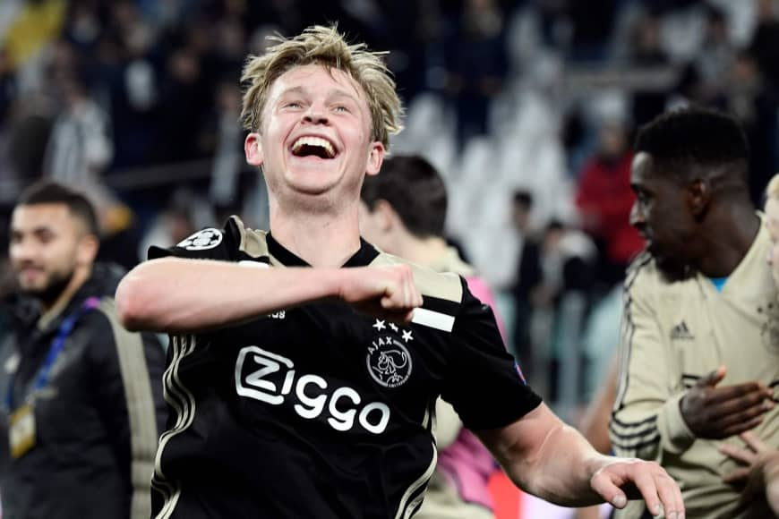
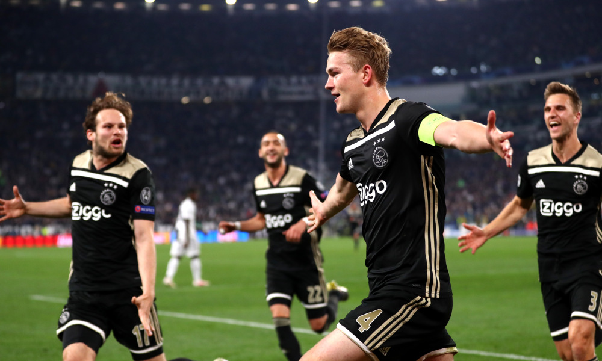
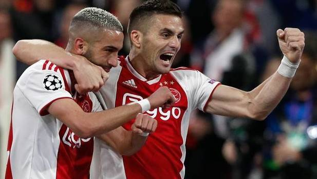

Mundo Futbol
Ajax
Es un club de fútbol neerlandés de la ciudad de Ámsterdam. Fue fundado en 1900 y juega en la primera división de la Eredivisie, categoría que ocupa desde los primeros años de la competición. Es históricamente uno de los tres clubes que dominan el fútbol de elite de los Países Bajos formando De Grote Drie (los tres grandes) junto a sus rivales el P. S. V., con el que disputa De Topper y el Feyenoord, con el que disputa De Klassieker o clásico neerlandés.

El club es el más laureado del país habiendo conseguido 33 ligas, 19 copas y 8 supercopas, poseyendo el récord de trofeos ganados en las dos primeras. De acuerdo a un estudio estadístico conducido por la IFFHS en 2009, fue el séptimo equipo europeo más exitoso del siglo XX.6 El club es uno de los cinco equipos que se ha ganado el derecho a conservar en propiedad la Copa de Europa, al ganarla de forma consecutiva entre 1971 y 1973.

También es uno de los tres equipos en ganar el triplete y la Copa Intercontinental en la misma temporada,7 que logró en la temporada 1971-72.8 Ajax, Juventus, Bayern Múnich, Chelsea y Manchester United son los cinco clubes que han ganado los tres grandes torneos de la UEFA.9 También han ganado dos veces la Copa Intercontinental, la Recopa de Europa de 1987, la Copa de la UEFA 1991-92, así como el Karl Rappan Cup, un predecesor de la Copa Intertoto de la UEFA en 1962.
